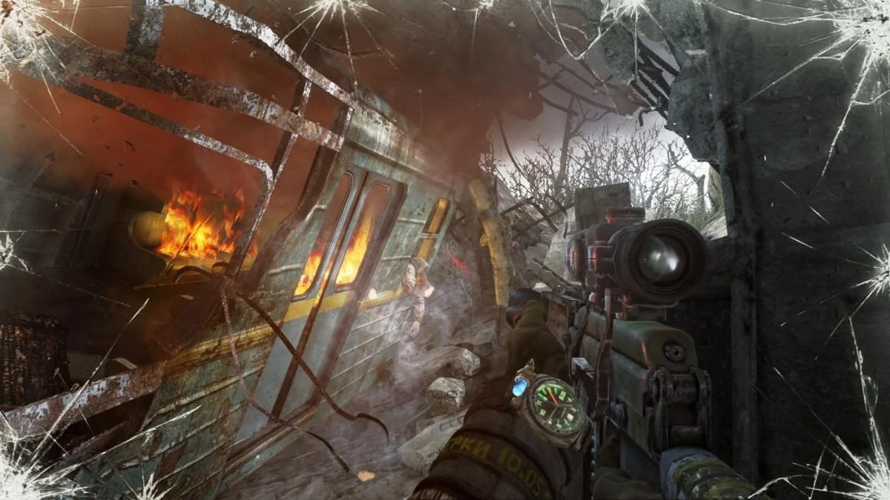

Metro: Last Light (укр. Метро: Останній промінь, рос. Метро 2033: Луч надежды, ) — відеогра в жанрі шутера від першої особи, розроблена українською студією 4A Games і видана Deep Silver 17 травня 2013. Є сиквелом попередньої гри розробників Metro 2033. Офіційна українська локалізація вийшла 25 липня 2014. Події Metro: Last Light відбуваються за кілька місяців після фіналу Metro 2033, коли Артем знищив лігво мутантів Чорних. Після того як спільного ворога жителів постапокаліптичного метро не стало, між ними назріває громадянська війна. Артем отримує шанс заручитися допомогою вцілілого Чорного та завадити завойовницьким планам «Червоної лінії».
